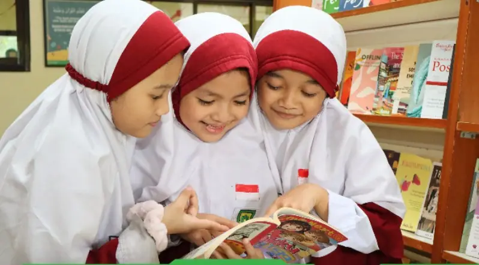

Pendaftaran
Pendaftaran Tahun Pelajaran 2027/2028 dibuka untuk KB, TK, SD, dan SMP. Siswa pindahan juga diterima.

Pendaftaran
Alur Penerimaan Peserta Didik Baru
One Day Service
Pendaftaran siswa baru 2027/2028 sudah dibuka.
Anak ingin belajar di Mutiara School?
- 1Pendaftaran online
- 2Membayar biaya pendaftaran
- 3Upload bukti transfer biaya pendaftaran
- 4Observasi, wawancara, & tes
- 5Pengumuman
- 6Pengambilan seragam
- 7Masuk sekolah
Jadi siswa Mutiara School
Syarat usia masuk
- KB
- Usia 3 tahun pada bulan Juli tahun ajaran berjalan
- TK A
- Usia 4 tahun pada bulan Juli tahun ajaran berjalan
- TK B
- Usia 5 tahun pada bulan Juli tahun ajaran berjalan
- SD kelas 1
- Usia 6 tahun. Di bawah 6 tahun dengan surat rekomendasi psikolog
- SMP
- Telah lulus SD
Dokumen yang disiapkan
- Pas foto 3×4 latar merah, 1 lembar
- Fotokopi akta kelahiran
- Fotokopi kartu keluarga
- Fotokopi KTP orang tua/wali
- Khusus SMP: fotokopi rapor kelas 4–6 yang dilegalisasi dan surat keterangan sehat dari dokter
Pertanyaan yang sering muncul
Berapa biayanya?
Biaya berbeda tiap jenjang dan gelombang, jadi tidak kami cantumkan di sini. Kirim pesan WhatsApp dan tim kami akan mengirim rincian biaya terbaru.
Apakah biaya bisa dicicil?
Bisa. Orang tua menandatangani surat kesanggupan di bagian keuangan.
Apakah menerima siswa pindahan?
Ya, dari sekolah mana pun, selama persyaratan administrasi terpenuhi.
Bisakah mendaftar langsung ke sekolah?
Bisa. Datang ke sekolah dan staf kami akan membantu pendaftaran online.
Educational Partnership